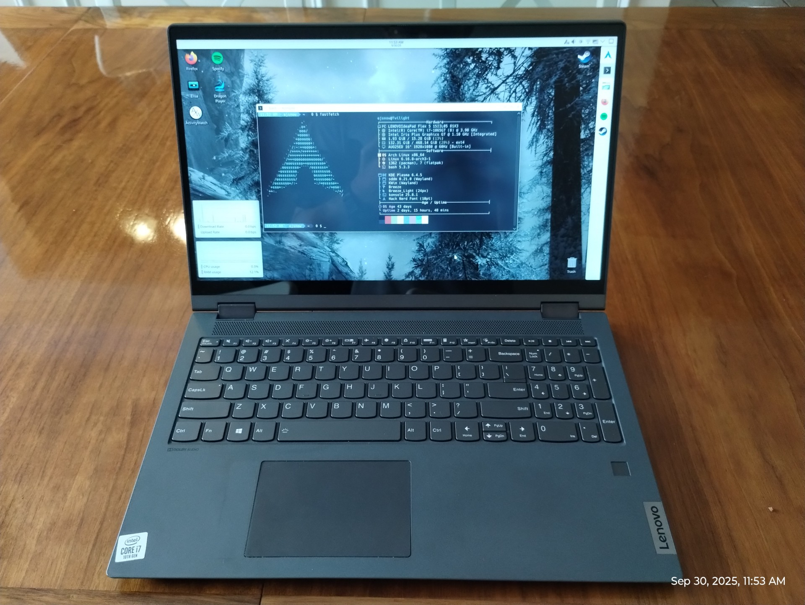
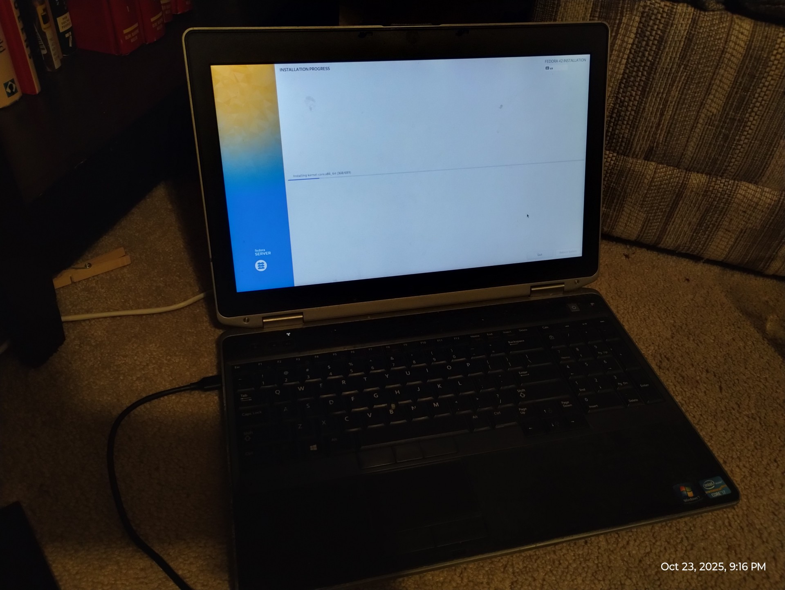

About me
I'm Ezra Snow, a nerdy (extremely) 17 year old guy who may be addicted to computers and Linux (I spend far too much time using and messing with Linux on my computer). I currently live in North Carolina, and I'm a senior in high school. After I graduate, I'm going to study computer science at LeTourneau University (yes, it's far, but I have reasons). When I'm not doing school or messing with Linux, I'm often playing video games.
Games I like (in no particular order):
- The Elder Scrolls V: Skyrim
- Forza Horizon 4
- Geometry Dash
- Hollow Knight
- Minecraft
- Just Shapes and Beats
I'm also getting interested in running a home server, but I'm kind of limited with what I can do right now, since I don't have a web domain. What I really want to do is set up a NAS so I can access files more conveniently from multiple devices. And perhaps a media server. There's a lot I could do with a server. But that's a distant dream right now. *sigh* Maybe someday. Although I've already been messing around with some stuff on my main PC.
Fun fact: I wrote parts of this section on my phone by ssh-ing into my PC. Termux is wonderful (The vast majority was written either on my PC or my laptop though).
My computers
Select any image below to view it full size
The Redstone Computer
My main PC, that I use for gaming, some web development, and pretty much everything else that isn't schoolwork (including Windows nostalgia). I built it over a year ago and it's worked really well, despite its age. It was originally a lowly office computer (a Dell OptiPlex 7020 SFF), but then I got my hands on it and forced it to game, upgrading most of the hardware to bring it up to gaming specs. Among the upgrades was a TP-Link Archer TX55E Wi-Fi card, since it only had Ethernet to begin with and I can't conveniently use Ethernet, plus I also wanted Bluetooth. I primarily play Geometry Dash, Skyrim, and Forza Horizon 4 on it, and I used to play a lot of Minecraft as well. It handles all of those games quite flawlessly.
Specs (original → upgraded):
- CPU: Intel Core i5-4590 → Intel Core i7-4790
- RAM: 8GB (2x4GB) DDR3 → Crucial 16GB (2x8GB) DDR3
- GPU: Intel HD 4600 (iGPU) → Radeon RX 6400 (dGPU)
- Storage: 128GB 2.5" SSD → 500GB Crucial MX500 2.5" SSD + 1TB Western Digital Blue 2.5" HDD
- OS: Arch Linux + Windows 10 Pro
Items in bold are considered to be significant upgrades.
Twilight

A Lenovo Ideapad Flex 5-15IIL05 laptop I got for free in August 2025 from my grandparents. The keyboard was mostly dead due to a lot of dirt finding its way into it, so they had gotten a new laptop and gave this one to me. After doing a deep clean of the keyboard, it works great now. I use it for school and general messing around when I don't want to sit down at my PC. It's even capable of lightweight gaming; it runs Minecraft and Geometry Dash very well (also JSAB and Hollow Knight run solidly too). It can even run Skyrim at 720p and extremely low settings, but it can't run much beyond that. It's kind of insane for a free laptop. The battery is even still pretty good, at least in Arch Linux (it's significantly worse in Windows).
Specs:
- CPU: Intel Core i7-1065G7
- RAM: 16GB LPDDR4
- GPU: Intel Iris Plus G7 (iGPU)
- Storage: Smasnug PM991 512GB NVMe SSD
- OS: Windows 10 Home → Windows 11 Home → Arch Linux
The Minecraft server (not anymore though)

This laptop has been in my family for a long time, and from 2022-2024 it was the kids' laptop (but mostly mine). It was originally my mom's, but for various reasons (mostly its age and the fact that it had a hard drive bottlenecking the crap out of it) she got a new computer, and this laptop came to me. Technically, it was only for school, but it was also my introduction to computers, Windows, PC gaming (despite the fact that it can't play very many games), and I even started playing around with Linux on it towards the end. I also put an SSD and more RAM in it. Before I started messing with Linux, I played around with Windows 7, first in a VM (which was horrendously slow), and then I set up a dual-boot with Windows 10. Windows 7 was actually really good on that laptop.
In October 2024 this laptop was retired after I built the Redstone Computer. However, it's still used as a Minecraft server, and it works surprisingly well for that, despite how slow it was as a PC. I guess it's because I'm running Linux on it (Windows is unacceptable for servers), and there's no desktop environment either (being a server, management is done through web dashboards or the terminal).
I mean the Minecraft server kinda died though so it's been shut down for a while. I don't want this to be a server forever so any server needs will probably be handled by either what's left of the Redstone Computer after I upgrade/replace it or a cheap mini PC, and then I'll turn this laptop into a Windows 7 nostalgia machine and hopefully give it back its original HDD.
Specs:
- CPU: Intel Core i7-3540M
- RAM: 8GB DDR3 → 16GB DDR3
- GPU: Intel HD 4000 (iGPU)
- Storage: 750GB Western Digital Scorpio Black 2.5" HDD → 500GB Crucial MX500 2.5" SSD
- OS: Windows 7 Professional → Windows 10 Pro → Linux Mint 22 → Debian 12 → Fedora Server 42